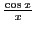
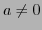
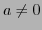

Next: . Up: Theorem of mean value; Previous: Exercises Contents Index
Some singularities are easy to diagnose. Consider the function
 at the point  . The function evaluates to
and is thus discontinuous at that point. Since the numerator
and denominator are continuous functions and the denominator vanishes while
the numerator does not, the left and right limits as
. The function evaluates to
and is thus discontinuous at that point. Since the numerator
and denominator are continuous functions and the denominator vanishes while
the numerator does not, the left and right limits as  do not
exist. Thus the function has an infinite discontinuity at the point
do not
exist. Thus the function has an infinite discontinuity at the point
 .
.
More generally, a function which is composed of continuous
functions and evaluates to
 at a point where  must
have an infinite discontinuity there.
at a point where  must
have an infinite discontinuity there.